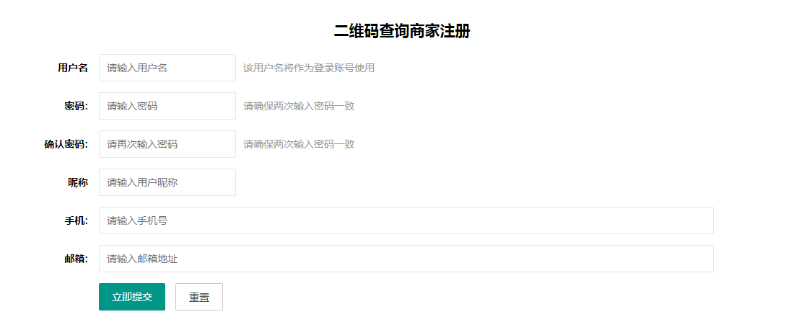
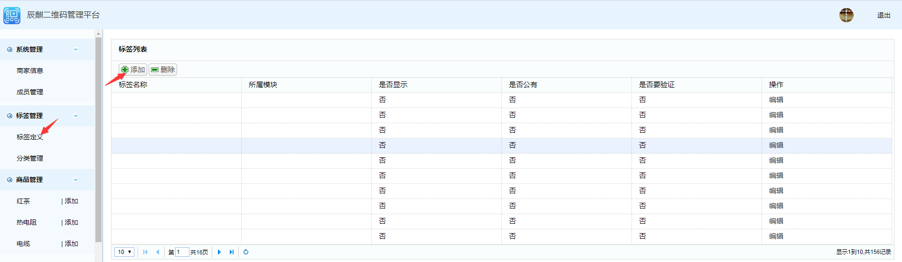
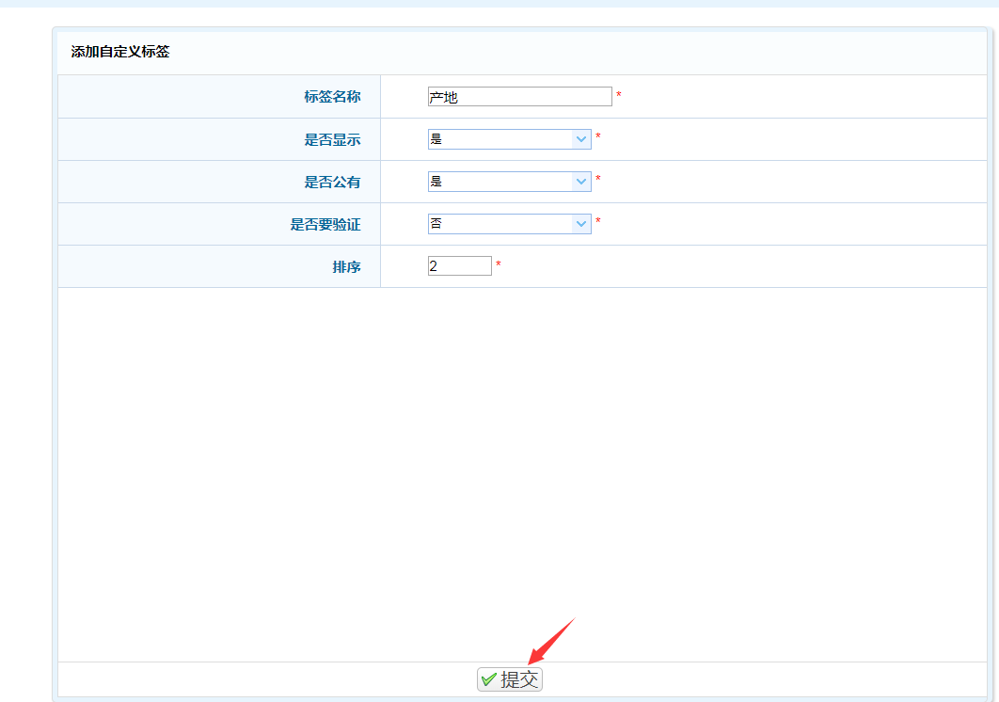
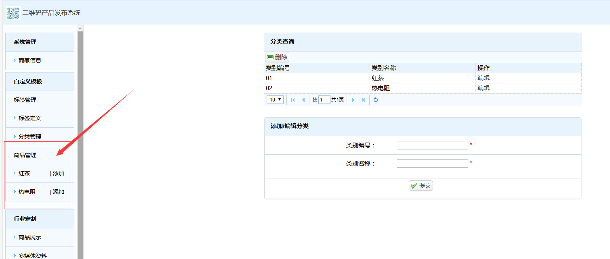

1、打开浏览器，通过以下网址：http://www.qrcodesy.com:8080/GoodsPublic/merchant/login进入登录界面，如下图所示；
试用账号：13608977126。密码：123456，点击登录按钮，进入系统。您也可以通过“注册新用户”按钮进行注册

2、登录成功后，进入辰麒二维码管理平台。界面左侧是导航栏，右侧为操作窗口，进入系统后，默认进入“商家信息”操作窗口，在“商家信息”窗口中，用户可以根据自己需要，设置账户信息和公司信息。
一、自定义模板使用操作说明
1、本系统通过定义产品的标签，例如：名称，产地，生产时间，配料，尺寸，净重等来描述产品的各个特性，因此，需要通过“标签定义”窗口来自定义需要在二维码中需要包含的各类标签，具体操作如下：
1.1、在左侧导航栏找到“标签定义”按钮，并点击进入“标签定义”窗口，右侧操作窗口会显示“标签列表”，在操作窗口中点击“添加”按钮，进入添加自定义标签界面，来添加需要定义的标签，操作流程如下图：

1.2、在添加自定义标签界面，依次设定“标签名称”、“是否显示”、“是否公有”、“是否需要验证”、“排序“等参数。以“产地”标签为例，首先在标签名称中，输入：产地。这里我们希望在商品管理时能够查看到“产地”这个标签，我们将“是否显示”设定为是，反之，我们设定为否。因为产品的产地一般都是相同的，所以我们将“是否公有”设定为是，同时将“是否要验证”设定为否，如果我们的产品产地各不相同，我们也可以将“是否公有”设定为否，而当我们在管理系统时，如果输入了相同的产地，希望系统提示我们，我们可以将“是否要验证”设定为是。如果我们要设定很多标签，我们需要给每个标签排序，以此来对标签的顺序进行设定，这里我们将产地的排序设定为2。设定完成后，点击提交即可。具体如下图所示：

同样的，可以再次设定其他的标签，比如“名称”等标签，具体设置如上所示。
2、如果我们生产的产品有很多种类，我们还可以设置不同的类别，将不同的产品归属到不同的类别中，比如茶叶可以分为红茶，绿茶等类别，这样设置类别，可以方便管理。具体操作如下：
2.1、点击导航栏“分类管理”按钮，进入分类管理窗口，在“添加/编辑分类”选项卡中输入类别编号，和类别名称，例如“红茶”，输入完成后，点击提交按钮即可。如下图所示：
可以根据产品分类添加，步骤如上。
3、提交成功后，在左侧导航栏，商品管理中就能看到之前加入的新的分类，如下图：

4、点击新增加的红茶分类，进入该分类的管理窗口，就能看到
我们在第1步设定好的标签，具体如下：